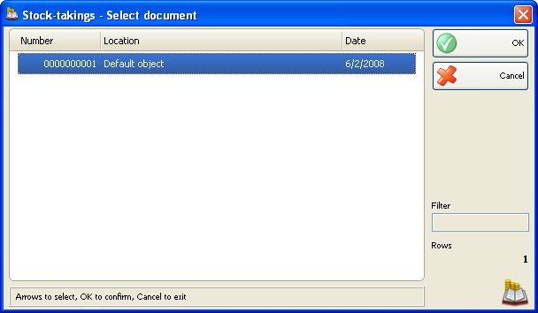
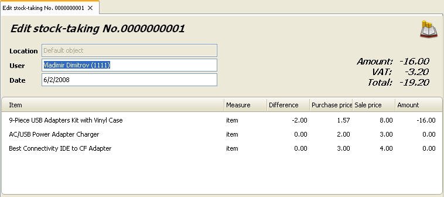

Editare si retiparire preluare-stoc
In Preluare-Stoc � Selectare document alegeti documentul pe care doriti sa-l editati sau sa-l tipariti si apasati tasta OK.

Folositi fereastra Editare preluare-stoc pentru editarea sau stergerea unei preluari de stoc achizitie.

Campul Utilizator va permite sa editati numele utilizatorului, care a efectuat operatia. Puteti vizualiza lista utilizatorilor apasand tasta F4.
Se poate introduce o valoare noua in coloana Diferente daca doriti sa modificati intrarea curenta (introduceti valoarea pentru diferenta intre cantitatea veche si cantitatea asociata pentru preluare stoc!). Apasati tasta F9 pentru salvare document.
Pentru a sterge o inregistrare anume din document, modificati cantitata corespunzatoare cu zero. Pentru stergerea intregului document, modificati toate cantitatile cu valoarea zero.
Dublu click pe data documentului va permite modificarea datei. Se va deschide fereastra Calendar� care va permite selectarea unei alte date (prin dublu click pe data dorita sau prin apasarea tastei OK dupa selectarea datei dorite). Dupa ce inchideti fereastra Calendar data selectata va aparea in fereastra Editare preluare-stoc.
Apasati tasta F9 pentru salvare document.
Se poate folosi fereastra Preluare-Stoc � selectare document pentru retiparirea unei preluari de stoc deja efectuata.
Dup ace selectati documentul care trebuie retiparit. Trebuie doar sa confirmati alegerea. Veti putea sa previzualizati sau sa tipariti direct, in functie de print settings.

�2006-2012 Microinvest, All rights reserved